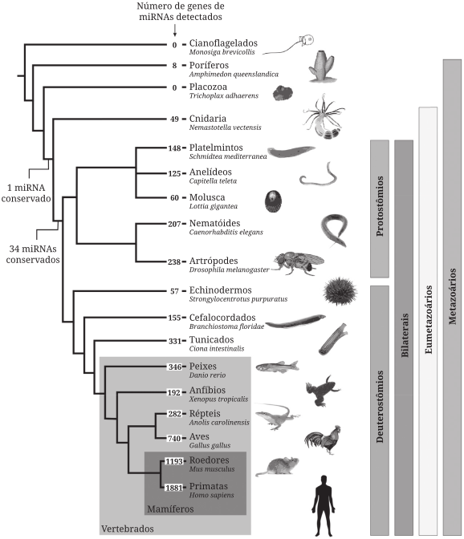
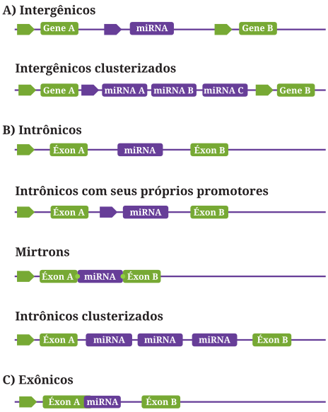
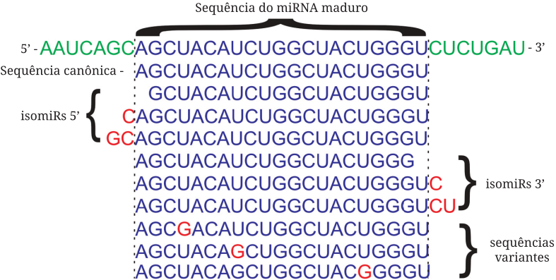
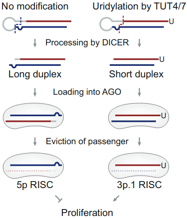
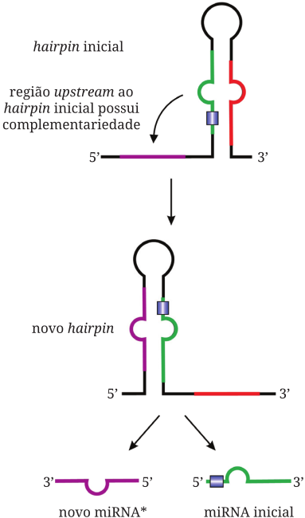

6 Origem e Evolução dos miRNAs
6.1 Quando teriam surgido os miRNAs?
Provavelmente precedem o surgimento dos organismos multicelulares, surgindo inicialmente como um mecanismo de defesa a parasitas e regulação gênica. Os ortólogos mais antigos foram achados na alga Chlamydomonas reinhardtii. Há duas hipóteses vigentes, uma relacionando o surgimento dos miRNAs a ancestrais de todos os eucariotos, visto que há uma maquinaria de silenciamento conservada, esta associada diretamente aos miRNAs de hoje. A outra argumenta o surgimento independente de miRNAs em plantas e animais, visto a significativa diferença entre seus processos de biogênese.
6.2 De que forma miRNAs estão relacionados com complexidade biológica?
Por ser, em sua essência, um mecanismo de regulação gênica, proporciona variação fenotípica que pode resultar no surgimento de diferenças e características marcantes em uma mesma espécie, colaborando com que, a partir de uma população quase-homogênea de células simples, possa surgir células mais complexas e heterogêneas. Isto é ilustrado ainda mais pela crescente contínua de genes de miRNAs ao longo do tempo, acompanhando o crescimento em complexidade de tipo celular dos organismos.
6.3 Comentar a figura 1.

A imagem ilustra a distribuição de genes nas diversas espécies do reino animal. Notamos uma ausência nos cianoflagelados e nos placozoa, mas à parte disso, há uma ubiquidade de miRNAs no Animalia. Alguns pontos de destaque importante é que, inicialmente acreditava-se na ausência de miRNAs em descendentes de Radiata, como poríferos e cnidários, porém isso foi algo questionado e na árvore observada temos representantes nessas duas seções. Com os miRNAs de cnidários apresentando características muito semelhantes àqueles de outros animais, no entanto, os de poríferos abrem pauta para dúvidas, visto que alguns dos seus miRNA não apresentam homologia significativa com outras espécies, sugerindo um possível surgimento independente.
6.4 Discorra sobre o miRBase
miRBase é um banco de dados de informação estrutural e funcional de miRNAs, gerenciado pela Universidade de Manchester. Criado em 2010, possui em registro quase 40 mil miRNAs, categorizados por meio de um identificador, sinalizando-se também informação filogenética, abrangendo mais de 270 espécies.
6.5 Descrever a organização genômica, conceituando, diferenciando e distinguindo cada uma delas

6.5.1 Intergênicos
Podendo se organizar singularmente ou em cluster, possuem características semelhantes a genes codantes, contendo em seua estrutura um promotores e regiões regulatórias.
6.5.2 Intrônicos
Se apresentam em íntrons, podendo até serem os íntrons, podem possuir seus próprios promotores ou dependerem da unidade que os contém. Sua localização peculiar resulta em interações interessantes com a maquinaria de splicing, como, caso eles ocupem o total espaço do íntron (miRtrons), podendo virar pre-miRNA durante o processo transcricional comum.
6.5.3 Exônicos
Apresentam-se, geralmente, nas junções éxon-íntron e, por sua localização, acarretam, também, interações de nota com a maquinaria de splicing, com sua transcrição podendo ser regulada por uma competição entre DROSHA e spliceossomo.
6.6 O que vem a ser análise filogenética e como o genoma auxilia neste estudo?
Análise filogenética é um campo da sistemática que trata de estabelecer relações evolutivas entre organismos a partir de características genéticas e moleculares destes.
Ela se torna relevante porque a nomenclatura estabelecida pelo miRBase pode ser capciosa, não agindo como um verdadeiro sistema taxonômico de classificação. Algo que acontece com frequência é uma série de miRNAs possuintes de uma mesma região seed terem nomes significativamente diferentes entre espécies, a partir daí torna-se indispensável utilizar suas localizações e estruturas no genoma para relacioná-los.
Características como a organização em cluster, transcrição anti-senso (relativa àqueles que se encontram em regiões codantes) e outras são essenciais para se traçar a origem evolutiva desses miRNAs. Diferenças organizacionais entre espécies próximas podem indicar eventos moleculares interessantes, como deleções, duplicações, perdas ou ganhos de função e translocações.
6.7 De que forma o genoma age como subtrato para o surgimento de novos miRNAs?
Os mesmos eventos geradores de variação que se aplicam a genes codificadores de proteínas se aplicam a genes de miRNAs, com a singular diferença que a estrutura do transcrito de miRNAs é conformacionalmente simples e estável, sendo muito maior a probabilidade de variações nos genes de miRNAs gerarem transcritos funcionais que as mesmas variações em genes de proteínas.
Um exemplo de mecanismo é a duplicação gênica. Ela pode ocorrer em tandem, porém, talvez mais interessante ainda, a possibilidade de ocorrer insercionalmente, resultando em sequências similares em regiões diferentes do genoma. Essas sequências separadas podem continuamente divergir, resultando no surgimento de novos genes. A aquisição de novas funções no gene duplicado é chamado de neofuncionalização.
6.8 Listar e comentar quais processos geram diversificação dos transcritos de miRNAs
6.8.1 isomiRs e alterações do seed

Pela imprecisão da clivagem de Dicer/DROSHA, uma gama de variantes podem ser formadas a partir do mesmo pri-miRNA, essas variantes são chamas de isomiRs. Nessas isoformas, variações em 5’ são possivelmente as mais importantes, porque elas resultam na mutação da sequência mais conservada do miRNA, ou sequência seed, responsável pela especificadade e endereçamento desse miRNA. Essas mudanças, ou seed-shifting, podem alterar o alvo do miRNA, desencadeando até o surgimento de uma nova função.
6.8.2 Edição de miRNA
Edições na sequência do transcrito que não refletem alterações na sequência genômica. Em mamíferos, geralmente ocorrem por meio das enzimas ADAR, que se ligam ao RNA de dupla fita, alterando as bases de Adenosina por Inosina. Esse processo pode direcionar o miRNA para outros alvos ou até impedir a ação de Dicer e DROSHA no mesmo.
6.8.3 Arm switching

Arm switching regulado por uridinilação em miR-324 (Kim et al. 2020)
A simples escolha de um dos “braços” de um miRNA, que tem como consequência a mudança da fita guia final. Nesse caso os braços recebem a nomenclatura 3p e 5p, referente à sua extremidade. A escolha de um braço versus o outro tem impactos funcionais extremamente importantes dentro da célula, com casos de braços opostos agindo em funções divergentes dentro da célula, como é no miR155, em que seus braços atuam positivamente (3p) ou negativamente (5p) na produção de IFN-I (Alivernini et al. 2018).
6.8.4 Mudança de hairpin

Reconfiguração da estrutura do hairpin, gerando uma nova sequência para o miRNA. Geralmente ocorre uma mudança upstream da formação do grampo, como ilustrado no esquema do livro (acima). Levando, por negligenciar um dos braços, a um arm switching!